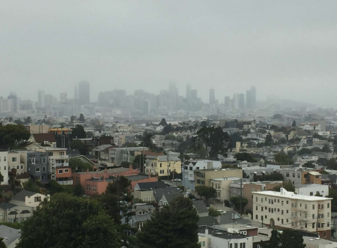
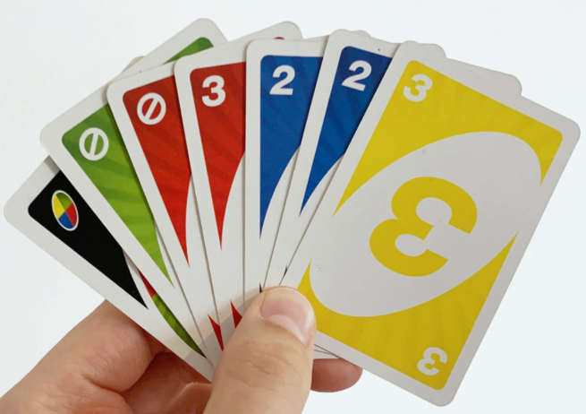

My name is Angeles. You pronounce like how you would say "Los Angeles".
My most favorite place I've been to is San Francisco. I really liked how gloomy the sky looked.

I would really like to go to Paris. I want to see the Eiffel Tower in person.
I'm hoping to get straight A's all year, but if not, I can settle with a B. I woud really like to have a good education so I can live a stable life.
My favorite card game to play is UNO. It's pretty basic but it's fun with friends and family.

I don't really know what I want to do when I grow up. It's a little bit of a mystery. Maybe a...
| Job | Reason |
| Dentist | Being a dentist sounds a little fun to me. I know it also sounds disgusting but I think I connect with children well, so I would like to be a children's dentist. |
| Fashion Designer | I've always wanted to sew and make clothes ever since I was little. It seemed fun, like a little arts and crafts project. I never tried because I don't know how. But it's always been a passion of mine to design. |
| Flight Attendant | This job idea is a little bit iffy. I have never been on a plane and I'm afraid of heights. But I think the idea of being on a flying plane, going around the world, seemed interesting. But this idea is just an idea. |